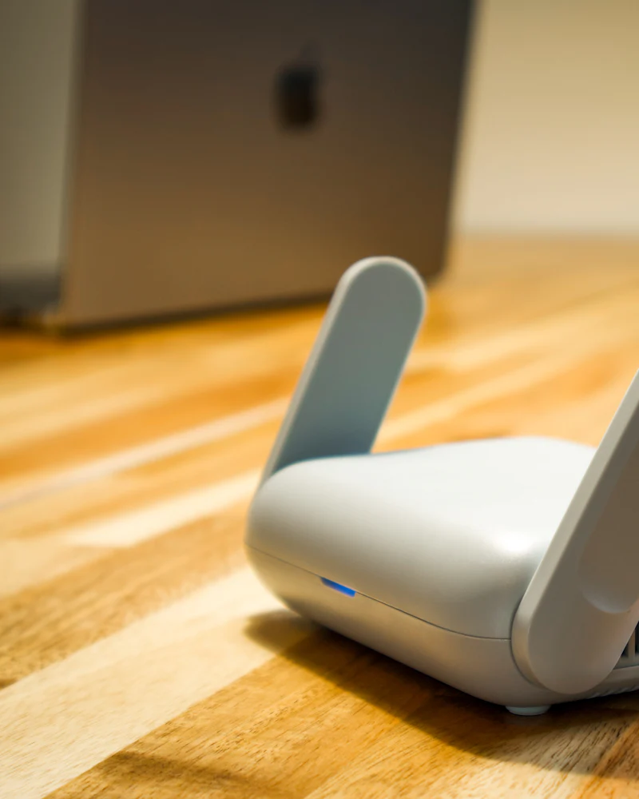

Dépannage informatique à Grasse et dans le pays grassois
Du centre historique de Grasse aux villas de Magagnosc ou de Plascassier, nous intervenons à domicile et en entreprise pour réparer, connecter et sécuriser votre informatique, avec des tarifs annoncés à l'avance.

Assistance informatique à domicile à Grasse
Dans les maisons et villas du pays grassois, le Wi-Fi peine souvent à couvrir l'ensemble de la propriété : nous installons des répéteurs ou un réseau maillé pour profiter d'internet partout, jusqu'à la terrasse ou au bureau du rez-de-jardin.
Nous dépannons aussi vos ordinateurs, imprimantes, tablettes et smartphones, mettons en place une sauvegarde automatique de vos photos et vous conseillons avant tout achat de matériel.
En savoir plus sur l'assistance aux particuliers
Maintenance informatique pour les entreprises grassoises
Le bassin grassois compte de nombreuses PME, notamment dans la parfumerie et les arômes, ainsi que des artisans, commerces et professions libérales. Nous devenons leur service informatique : postes, serveurs, réseau, sauvegardes et cybersécurité.
Notre helpdesk à distance règle la plupart des demandes en quelques minutes, et nous intervenons sur site à Grasse, Mouans-Sartoux ou Mougins lorsque c'est nécessaire.
Découvrir l'offre entreprisesQuartiers et communes desservis autour de Grasse
Nous intervenons à Grasse, dans ses hameaux et dans les communes voisines du moyen-pays.

- Centre historique
- Saint-Claude
- Saint-Jacques
- Les Aspres
- Magagnosc
- Plascassier
- Mouans-Sartoux
- Mougins
- Peymeinade
- Le Tignet
- Châteauneuf-Grasse
- Opio
Nous intervenons aussi à Cannes, Antibes, Nice. Voir toute notre zone d'intervention.
Dépannage informatique à Grasse : vos questions

Intervenez-vous dans les hameaux autour de Grasse ?
Oui : Magagnosc, Plascassier, Saint-Mathieu, Saint-Jacques… ainsi que Mouans-Sartoux, Peymeinade, Le Tignet et Châteauneuf-Grasse. Le rendez-vous est fixé selon nos disponibilités.
Mon Wi-Fi ne passe pas dans toute la maison, que proposez-vous ?
Nous mesurons la couverture pièce par pièce, puis installons la solution adaptée : répéteur, réseau maillé (mesh) ou câblage vers un point d'accès. Vous profitez d'une connexion stable partout, y compris à l'extérieur.
Le déplacement à Grasse est-il facturé ?
Les éventuels frais de déplacement vous sont toujours annoncés avant le rendez-vous. Consultez notre page Tarifs ou demandez un devis gratuit.

Un souci informatique à Grasse ?
Appelez-nous pour un diagnostic gratuit par téléphone et un rendez-vous rapide.